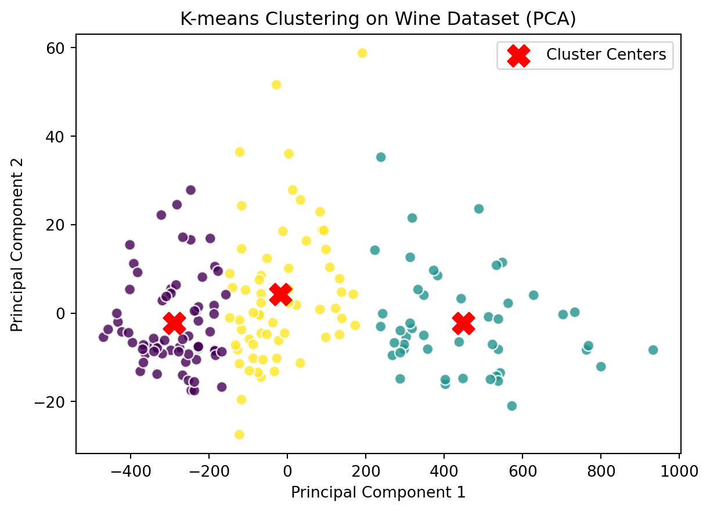

Clustering is a powerful technique that allows us to uncover hidden patterns and structures within data.
In this blog post, the fundamentals of clustering, the requirements for implementing machine learning code, and showcase a data visualization to better understand the concept behind clustering algorithms.
Understanding Clustering:
Clustering is a type of unsupervised learning where the goal is to group similar data points together. Unlike supervised learning, there are no predefined labels for the data, and the algorithm must identify patterns on its own. This makes clustering particularly useful for exploratory data analysis, customer segmentation, anomaly detection, and more. Requirements for Machine Learning Code:
Selecting a Clustering Algorithm: There are various clustering algorithms available, each with its strengths and weaknesses. Common algorithms include K-Means, Hierarchical Clustering, and DBSCAN. The choice depends on the nature of the data and the desired outcome.
Data Preprocessing: Clean and preprocess the data to ensure it’s suitable for clustering. This may involve handling missing values, scaling features, or encoding categorical variables.
Feature Selection: Choose relevant features that contribute to the clustering process. Dimensionality reduction techniques like PCA (Principal Component Analysis) can be employed to simplify complex datasets.
Hyperparameter Tuning: Tune the hyperparameters of the chosen clustering algorithm to achieve optimal results. This might involve experimenting with the number of clusters, distance metrics, or other algorithm-specific parameters.
Evaluation Metrics: Define metrics to evaluate the performance of the clustering algorithm. Common metrics include silhouette score, Davies-Bouldin index, or visual inspection of cluster separation.
Data Visualization: Now, let’s bring our clustering results to life through a compelling visualization.
This blog demonstrates the clusters formed by the K-Means algorithm on a two-dimensional dataset. The colored points represent different clusters, and the red ‘X’ marks indicate the cluster centroids.
Data preprocessing
The popular Wine dataset is being used, which is included in scikit-learn. The dataset contains thirteen features, but for simplicity, we are using only the first two features in the visualization.
::: {.cell execution_count=1} ``` {.python .cell-code} # Import necessary libraries import numpy as np from sklearn.cluster import KMeans from sklearn import datasets from sklearn.metrics import silhouette_score import matplotlib.pyplot as plt
#Load the Wine dataset wine= datasets.load_wine() data= wine.data ``` :::
K-means clustering:
K-means clustering, a widely used partitioning method, seeks to organize a dataset into K clusters by assigning each data point to the cluster with the nearest mean. This iterative process refines clusters until convergence, providing valuable insights into inherent patterns. However, the effectiveness of K-means can be impeded by high-dimensional datasets, where numerous features contribute to increased computational complexity. In such cases, the application of Principal Component Analysis (PCA) as a preprocessing step becomes essential. PCA is a dimensionality reduction technique that transforms original features into a set of linearly uncorrelated variables, known as principal components. By focusing on the most significant dimensions, PCA retains crucial information while reducing the overall dimensionality, facilitating a more efficient clustering process.
In our specific use case, PCA is applied to the Wine dataset, reducing it to two principal components (n_components=2). This reduction simplifies the dataset while preserving a substantial portion of its variability. The reduced data is then fed into the K-means clustering algorithm. This two-step process of PCA followed by K-means offers several advantages, including overcoming the curse of dimensionality, providing a more interpretable representation, and enhancing the quality of resulting clusters. By concentrating on the directions of maximum variance, PCA helps to reveal and emphasize the most relevant information for clustering, ultimately contributing to more cohesive and well-defined clusters in a lower-dimensional space.
Visualization:
Visualizing the clusters helps us understand how well the algorithm has grouped the data. Let’s use a scatter plot to visualize the clusters and their centroids.
# Import necessary librariesfrom sklearn.decomposition import PCA# Apply PCA to reduce dimensionalitypca = PCA(n_components=2) # Choose the number of components (2 for visualization)reduced_data = pca.fit_transform(data)# Perform K-means clustering on the reduced datakmeans_pca = KMeans(n_clusters=3, random_state=42)kmeans_pca.fit(reduced_data)labels_pca = kmeans_pca.labels_centers_pca = kmeans_pca.cluster_centers_# Visualize the clusters in the reduced-dimensional spaceplt.scatter(reduced_data[:, 0], reduced_data[:, 1], c=labels_pca, cmap='viridis', s=50, alpha=0.8, edgecolors='w')plt.scatter(centers_pca[:, 0], centers_pca[:, 1], c='red', marker='X', s=200, label='Cluster Centers')plt.title('K-means Clustering on Wine Dataset (PCA)')plt.xlabel('Principal Component 1')plt.ylabel('Principal Component 2')plt.legend()plt.show()

Silhouette Score:
Evaluating Clustering Performance with Silhouette Score:
The silhouette score is a metric that quantifies how well-defined and separated the clusters are. It ranges from -1 to 1, where a high value indicates well-separated clusters. Let’s calculate the silhouette score for our K-means clustering.
Clustering is a fascinating aspect of machine learning, enabling us to unveil patterns and structures within datasets. By understanding the requirements for implementing clustering algorithms and visualizing the results, we gain valuable insights into the underlying relationships within our data.
References have been taken from various sources on the Internet.